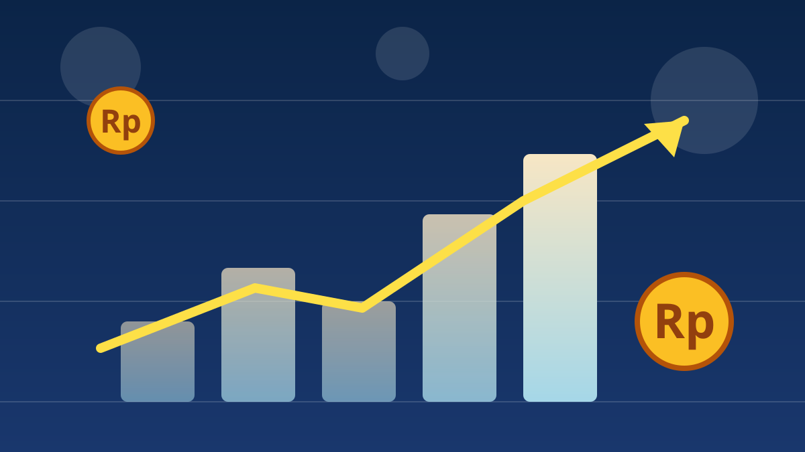

1 / 7

💰 EKONOMI
IHSG kena "Octobear", anjlok ke 6.031
Saham Indonesia ditutup merah semua hari ini — 497 saham koreksi. Ada apa di baliknya? Geser →
2 / 7
📉
Angkanya: minus 1,88%
IHSG ditutup melemah 1,88 persen alias turun 115,44 poin ke posisi 6.031,28 pada perdagangan Kamis (8/10/2026). Sepanjang hari indeks betah di zona merah.
Sebanyak 497 saham melemah, cuma 171 yang menguat, dan 119 stagnan. Nilai transaksi tercatat Rp12,72 triliun.
3 / 7
🛢️
Pemicunya: harga minyak melonjak
Harga minyak dunia naik lebih dari 4 persen setelah ada laporan Pemerintahan Trump berencana melancarkan serangan masif terhadap Iran — yang bisa terjadi sebelum pemilu sela AS.
Badai tropis Isaias juga bikin produsen minyak di Teluk Meksiko menghentikan produksi lebih dari 510 ribu barel per hari. Minyak naik = biaya naik = pasar panik.
4 / 7
🌏
Bukan cuma Indonesia yang merah
Bursa Asia ikut kompak melemah: Hang Seng Hong Kong minus 1,43 persen, Shanghai Composite turun 0,79 persen, dan Nikkei 225 Jepang merosot 1,42 persen.
Bursa Eropa dan Amerika Serikat juga dominan melemah. Jadi ini tekanan global, bukan salah satu negara doang.
5 / 7
⚠️
Waspada level 6.000
Analis Phintraco Sekuritas memperkirakan IHSG bakal kembali menguji level kritis 6.000 pada perdagangan Jumat (9/10/2026).
Kalau bertahan di atas 6.000 dan rebound, berpotensi membentuk pola double bottom. Tapi kalau jebol, IHSG diperkirakan menguji 5.800–5.900.
6 / 7
💬
Kata netizen
Di Instagram, kolom komentar akun-akun info saham isinya curhatan investor ritel: portofolio pada merah, ada yang bilang lagi averaging down, ada yang nyulut fenomena "Octobear". Sentimennya dominan pesimis tapi ada juga yang ngajak sabar nunggu rebound. (Suara netizen — bukan fakta.)
7 / 7
🤔
Efeknya ke lo apa?
Buat yang belum main saham: pasar lagi diskon, tapi diskon karena alasan yang bikin deg-degan. Jangan fomo masuk cuma karena "murah".
Buat yang udah nabung saham atau reksadana: harga unit lo kemungkinan turun sementara. Kuncinya tetap sama — jangan panik jual di titik terendah.